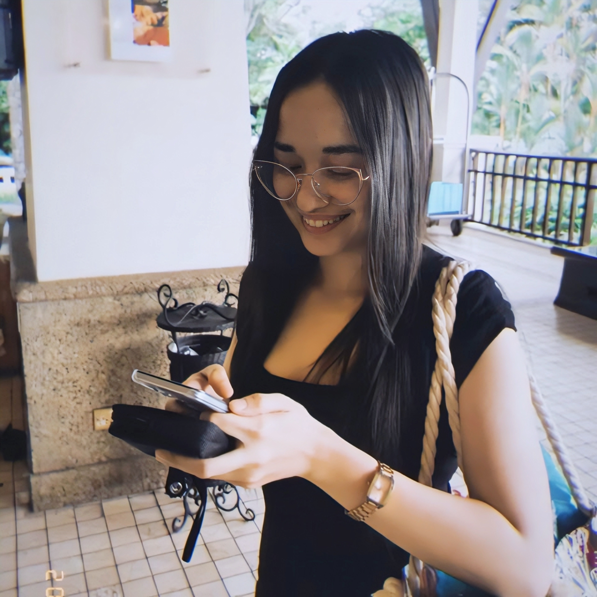

My Resume

Summary
Memory updated With 5 years of experience as a freelance full-stack web
developer, I specialize in designing and implementing responsive,
scalable, and user-focused web applications. Proficient in full-stack
technologies including HTML, CSS, JavaScript, React, Node.js, and Python,
I deliver innovative and high-performing digital solutions tailored to
diverse client needs.
My professional journey spans roles as a web development team lead, branch
manager, operations manager, computer shop manager, virtual assistant, and
executive assistant. These experiences have honed my leadership, technical
troubleshooting, and project management abilities, as well as strengthened
my organizational and communication skills. My background in customer
service and ESL teaching further enhances my ability to collaborate
effectively with clients and stakeholders to achieve shared goals.
I am passionate about leveraging my technical expertise and multifaceted
professional experience to build impactful web solutions that drive
engagement and business growth.
Education
Bachelor's Degree: B.S. Computer Science
School: University of the Philippines (Min.)
Thesis: Web-Based Software System for Schedule Management Notification Via
Email, Social Networking Sites, and SMS for Student Organization
Work Experience
-
Account Specialist for ePayment (Native speaker with Global English)
Company: TDCX Malaysia
Duration: October 2023-present
-
Delivered exceptional customer support for an e-payment software
through chat, outbound calls, and email, ensuring a seamless
experience across all communication channels.
-
Proactively identified customer needs and provided strategic
solutions, achieving first-contact resolution and maintaining high
satisfaction levels.
-
Collaborated with internal teams to enhance workflows and
contributed to the continual improvement of service standards in the
e-payment space.
-
Virtual Assistant
-
Under an agency:
Agency: Pineapple Virtual Assistant Hub Agency
Duration: Feb 2023-Oct 2023 (8 months)
-
Enhanced and managed Shopify websites for improved user
experience and functionality.
-
Conducted extensive research on diverse topics to provide
insightful analyses.
-
Scheduled, managed, and executed email campaigns for increased
engagement and sales.
-
Created visually appealing marketing content, including graphics
and multimedia.
-
Redesigned websites and automated web processes for improved
efficiency.
-
Designed sales funnels to optimize conversions and lead
generation.
-
Independent Virtual Assistant Services:
Duration: Dec 2022-Feb 2023 (2 months)
- Designed engaging content for TikTok.
-
Held an entry-level position as a graphic designer, video
editor, and photo editor.
- Created content for social media on a part-time basis.
- Edited videos, incorporating special effects.
-
Produced short-form videos for various social media platforms.
-
Implemented effective social media strategies, resulting in
increased followers.
-
Freelance Web Developer
Remote
Duration: Dec 2017-Dec 2022 (5 years)
- Developed website using HTML, JavaScript, AJAX, and JSON
-
Provided front-end development using WordPress and editing software
-
Executive Assistant
Company: Dumoy Heavy Equipment Parts Trading
Duration: May 2021-Aug 2021 (3 months)
- Improved company efficiency
- Provided executive support for calls and emails
- Enhanced team productivity with presentations and updates
-
Branch Manager
Company: Hub 101 Computers
Duration: Jun 2020-Nov 2020 (5 months)
- Led and managed operational functions.
- Oversaw tasks related to sales, accounting, and HR.
-
Developed, debugged, and modified the employee manual for the
company's CRM system.
-
English Language Teacher
Company: RareJob, Inc.
Duration: Feb 2019-Feb 2020 (1 year)
-
Specialized in teaching English to non-native speakers, of all ages,
in a virtual setting.
-
Software Developer Operations Manager/Web Developer
Company: F-Squared Technologies, Inc.
Duration: Feb Jun 2018-Jan 2019 (7 months)
- Trained junior web developers
- Developed websites
- Collaborated on website development plans
- Multi-tasked to meet deadlines
- Ensured code compliance with standards
Skills
- Full-Stack Web Development
- Web Research
- Customer Service
- Excellent Communication Skills
- English Proficient
- Filipino Proficient
- Admin Tasks
Awards, certifications, or other achievements
Achievement
-
100% UIQ/QA for Product Support Onboarding Hall of Fame Winner for
CONNECT (TDCX, October, 2024)
-
Product Support Onboarding Hall of Fame Winner for CONNECT Pillar - Tier
3 (CSAT) (TDCX, May, 2024)
-
The Kabayan TOPS - Kabayan Ten Outstanding Public School Students of the
Philippines 2010 Scholarship Recipient
-
Department of Science and Technology - Science Education Institute
Junior Level Science Scholarships (DOST-SEI JLSS) 2014 Recipient
-
University of the Philippines College Admission Test (UPCAT) for S.Y.
2012–2013
-
University of the Philippines Mindanao CSM (College of Science and
Mathematics) Colloquium Research Presenter 2018
-
Society of Programmers and Refined Scientists (SPARCS) 2013-2015, Public
Information Officer, 3rd Year Representative
-
University of the Philippines Youth to the Nations (Y2DN) 2014-2015,
Vice-President
- U.P. Mindanao B.S. Computer Science Class 2013-2016, Bloc Leader
-
Skin White and Eskinol’s Ms. Beauty All Over Face of the Night, First
Runner Up 2014 (Citywide Interschool Beauty Pageant)
Seminars & Trainings
-
Certificate of Excellence for Data Science Certification Course (Google
Developer's Launchpad, Programming Hub, November, 2024)
-
Certificate of Excellence for Artificial Intelligence Certification
Course (Google Developer's Launchpad, Programming Hub, November, 2024)
-
Certificate of Excellence for IT Basics Certification Course (Google
Developer's Launchpad, Programming Hub, November, 2024)
-
Certificate of Excellence for Ethical Hacking Certification Course
(Google Developer's Launchpad, Programming Hub, November, 2024)
-
Certificate of Excellence for Data Science Certification Course (Google
Developer's Launchpad, Programming Hub, October, 2024)
-
Certificate of Excellence for Python 3 Certification Course (Google
Developer's Launchpad, Programming Hub, October, 2024)
-
Certificate of Excellence for Python Certification Course (Google
Developer's Launchpad, Programming Hub, October, 2024)
-
Project Training: WBT: SPE - US Verification Updates 2023/2024 (TDCX,
26th of January, 2024)
-
Project Training: WBT: SPE - Connect Unified Accounts (TDCX, 22 April
2024)
-
Project Training: WBT: SPE - 2024 Annual Privacy Training (TDCX, 10 May
2024)
-
Project Training: ILT: SPE New Hire - PSO Direct Onboarding - Wave 76A
(Wave 6A) - (TDCX, November 13, 2023)
-
Project Training: ILT: SPE Tenured Agents - Stripe Steps of Support -
Batch 6 (TDCX, 22 May 2024)
-
Project Training: VILT: SPE - Tenured Agents - Priority Operations
Training - Wave 21 - TDCX, (December 18, 2023)
-
Business Virtual Assistant Training Program (Pineapple Virtual Assistant
Hub, Feb 2023)
-
120 hour TESOL Certificate Course (International Open Academy, June
2020)
-
Introduction to UX Design 2018 (Spacelab, Davao City, Oct. 27, 2018)
- Women Techmakers Davao 2014 (Bolton, Davao City, Nov. 15, 2014)
-
Mindanao Conference for Information Technology Students (MCITS) (Davao
City, 2013 & 2014),
- SEO Tutorial for Beginners (Udemy, Feb 2019)
-
Web Design for Web Developers: Build Beautiful Websites! (Udemy, Nov
2021)
-
Next.js & React - The Complete Guide (inc. Two Paths!) (Udemy, Aug 2021)
Hobbies
Contact Me